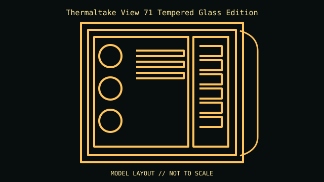

[ IDENTIFIED ENCLOSURE // E-ATX TEMPERED-GLASS FULL-TOWER ]
Thermaltake View 71 Tempered Glass Edition
592 × 274 × 577 mm (H × W × D); E-ATX tempered-glass full-tower. Board fit: Mini-ITX, microATX, ATX and E-ATX; eight standard slots plus two vertical GPU positions. GPU: 310 mm with the drive cage installed; up to 410 mm with the cage removed/reconfigured per the manual. CPU cooler: 190 mm maximum CPU-cooler height. Radiator: Front up to 420 mm, top up to 420 mm and bottom up to 240 mm; individual radiator thickness/fan combinations need the manual’s clearance diagrams. PSU: ATX PSU up to 220 mm.

REVISION / CONFIGURATION CAVEAT: The original View 71 TG (CA-1I7-00F1WN-00) is distinct from RGB editions and bundled fan kits. The four glass panels increase handling risk and should be removed before moving the chassis.
Mechanical specifications and fit
| Exact model | Thermaltake View 71 Tempered Glass Edition — E-ATX tempered-glass full-tower. |
|---|---|
| Dimensions and construction | 592 × 274 × 577 mm (H × W × D); see cited manufacturer page/manual for measured envelope and revision-specific detail. |
| Motherboard form-factor fit | Mini-ITX, microATX, ATX and E-ATX; eight standard slots plus two vertical GPU positions. |
| GPU clearance | 310 mm with the drive cage installed; up to 410 mm with the cage removed/reconfigured per the manual. |
| CPU-cooler clearance | 190 mm maximum CPU-cooler height. |
| Radiator clearance | Front up to 420 mm, top up to 420 mm and bottom up to 240 mm; individual radiator thickness/fan combinations need the manual’s clearance diagrams. |
| PSU clearance | ATX PSU up to 220 mm. |
| Drive mounts | Modular trays support up to six 2.5-inch or three 3.5-inch drives, with a separate rack configurable for up to four 2.5-inch or four 3.5-inch drives. |
Compatibility and service notes
Retain glass hinges, support arms, riser bracket and modular drive hardware. Radiator and drive-cage placement can compete; do not infer simultaneous maxima from individual limits.
- Check GPU length and thickness, its power-plug bend, cooler height and radiator/fan assembly against the same installed configuration; advertised maxima may conflict.
- Confirm motherboard standoffs match the board holes and inspect front-panel, USB and fan-controller headers before powering the build.
- Record the exact SKU, manual revision, removed brackets and unused drive hardware. Measure the individual chassis before shipping or fitting nonstandard parts.
Manufacturer and manual sources
- Thermaltake View 71 Tempered Glass Edition — manufacturer product specificationsManufacturer product/model page; use the SKU and configuration that match the specimen.
- Thermaltake — View 71 TG installation manual (PDF)Model-specific installation/manual reference for mounting diagrams and configuration limits.
Clearance limits describe separate manufacturer fit conditions; they are not a promise that all maximum-size parts fit simultaneously. Confirm the exact revision before purchase or installation.